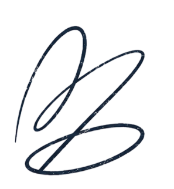
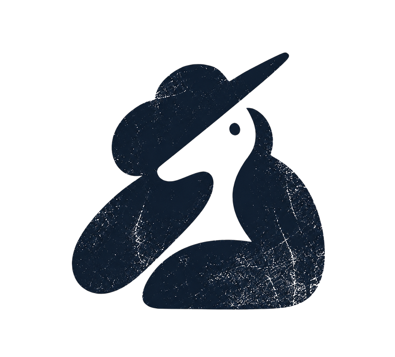
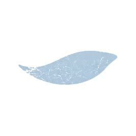
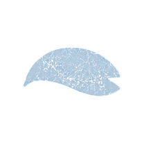
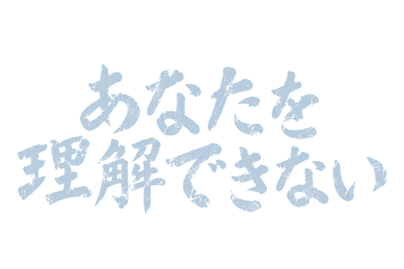

VOICE 01 / ENGLISH
01 / THE SPEAKER



VOICE 02 / JAPANESE
02 / THE LISTENER
ENGLISH CLEARER ←→ JAPANESE CLEARER
TWO VOICES. A SHIFT IN UNDERSTANDING.
RHYTHM / 共通のリズム
A COMMON LANGUAGE · 16 STEPS